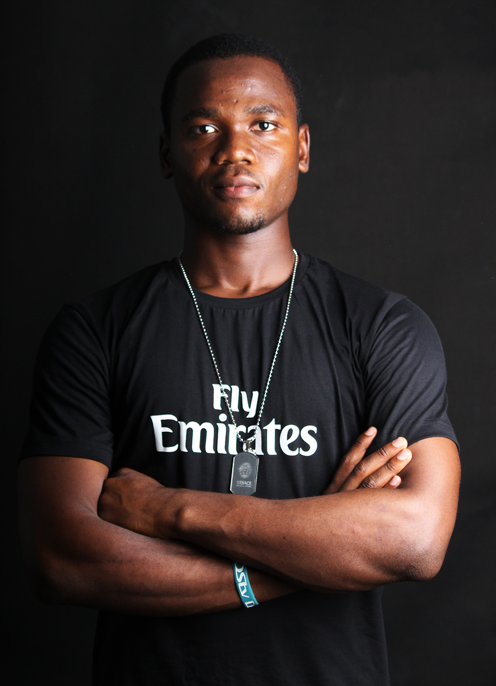

Personal Profile
A highly enthusiastic Flutter App Developer with over a year experience with flutter. A creative personality; savvy in research and more research to make work stand out, have Cleary understood the architecting of native apps using flutter framework,
with understanding in persistence and networking in flutter. A problem solver with critical thinking and analytical abilities and very adept at developing and producing amazing flutters applications. Also possessing creative skills for contributing
new and innovative ideas towards projects and task and a good team player. I currently seek exciting opportunities where a combination of creative environment and entertaining mindset is encouraged; leveraging skills to contribute to the development
in my department and to the overall organizational growth.
Core Competencies
-
Creative Architecting
- Leadership Skills
- Super Tech Savvy
- Unbounded Savvy
- Strong Speed and accuracy at working
Personal Skills
-
Visionary and focused in getting work done
- Excellent Leadership Skills
- Ability to prioritize and work independently without supervision
- Good analytical and interpersonal skills
Work Experience
SERVED AS A FRONTEND DEVELOPER AT PROJARO NIGERIA LIMITED(A TECH HUB) FEBRUARY 2019 –FEBRUARY 2020
- Started learning flutter
- Worked on certain projects on flutter
- Performed 100 days of code on flutter
President, Nigeria Association of Computer Science Students (UNIVERSITY OF ABUJA) OCTOBER 2019 –JULY 2021
- Observed everyday management of the department in the faculty
- Managed a team of Executive members and Judiciary
- Served as a tech Oriented President.
Other Skills
- Videography/Video editing
- Prototyping
- Motion design with blender
Computer Skills
- Flutter App development, Typing Speed of 70 Wpm, Premier Pro, AfterEffects, Blender.
Education
- Junior Secondary School Gwarimpa Abuja 2010-2013
- Army Day Secondary school, Maitama, Abuja 2014 -2016
- University of Abuja ,Airport Road, Abuja January 2017- July, 2021 SOCIAL